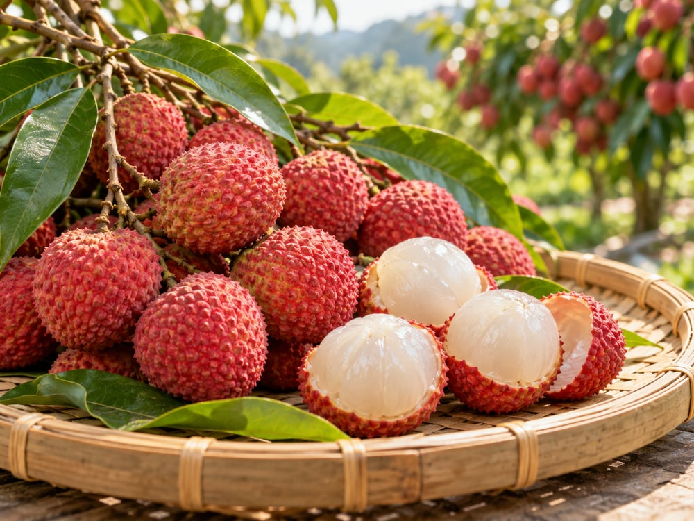

03草屯鎮 · 食農探索 04/08
荔枝
小果實，多種名字
認識草屯鎮的荔枝。荔枝有不同品種，採收後也需要小心照顧。認識果農工作、選購完整果實，依家人需求購買，讓收成好好被享用。

🌿 特色與食農知識
1
認識食材
荔枝有黑葉、玉荷苞與糯米糍等不同品種。
2
生活行動
先查看家中庫存與用餐需求，再決定購買份量，能減少浪費。
🌏 消費行動與食安
選購荔枝可觀察果柄是否萎縮、果皮是否明顯變黑。
過敏原參考｜以實際食材為準過敏參考：有相關食物過敏史者請留意；料理及加工品另確認實際配料與標示。